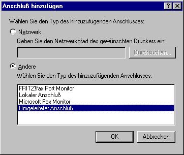
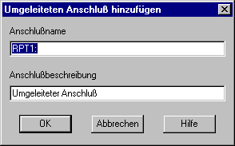
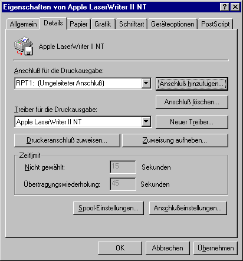
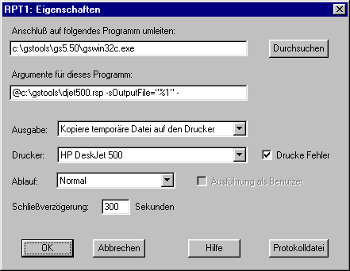
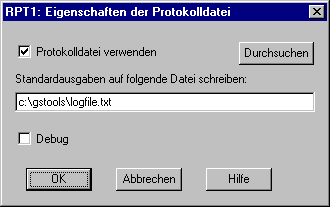
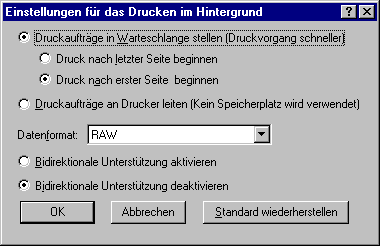
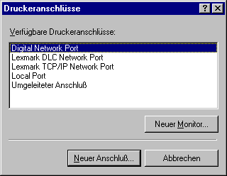
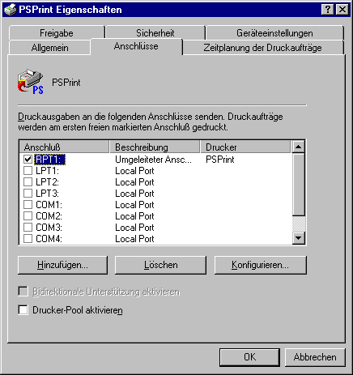

RedMon kann in Verbindung mit jedem Programm eingesetzt werden, das Daten über die Standardeingabe entgegennimmt.
Mit Hilfe von RedMon lassen sich umgeleitete Druckeranschlüsse erzeugen. Beim Anschluß eines Windows-Druckers an den umgeleiteten Druckeranschluß werden alle an den umgeleiteten Anschluß gesendeten Daten durch RedMon an die Standardeingabe eines Programms weitergeleitet. Dieses Programm ist dann für die weitere Verarbeitung der Daten und für das Erzeugen einer neuen Ausgabe verantwortlich.
Ein auf einen RedMon-Druckeranschluß umgeleiteter PostScript-Windows-Drucker kann in einem Netzwerk gemeinsam benutzt werden. Wenn dieser PostScript-Windows-Drucker so konfiguriert ist, daß er Ghostscript und einen Nicht-Postscript-Drucker verwendet, erscheint er anderen Netzwerk-Clienten als ein PostScript-Drucker.
RedMon unterstützt Windows 95, NT 4.0 und 3.51.
Anfänger sollten sich beim Konfigurieren von RedMon besser von erfahrenen Nutzern helfen lassen.
Installation
Deinstallation
Druckeranschluß hinzufügen
Anschlußeinstellungen
Eigenschaften der Protokolldatei
Was ist Ghostscript?
Ghostscript-Beispiel
Häufig auftretende Probleme
Copyright
Um RedMon unter Windows NT zu installieren, sind Administratorrechte erforderlich.
Bezüglich der weiteren Installation folge man dem Ghostscript-Beispiel.
Windows 95: Nach Hinzufügen des Druckeranschlusses muß dieser über Anschlußeinstellungen und Spool-Einstellungen konfiguriert werden. Die Spool-Einstellungen jedes mit diesem Druckeranschluß verbundenen Druckers müssen auf Bidirektionale Unterstützung deaktivieren eingestellt sein.
Windows NT: Nach dem Hinzufügen eines Druckeranschlusses muß dieser über Druckeranschluß konfigurieren konfiguriert werden. Die Bidirektionale Unterstützung sollte deaktiviert sein.
Der Name des Druckeranschlusses darf nicht mit dem eines bereits vorhandenen Druckerschlusses übereinstimmen. Insbesondere kann kein umgeleiteter Druckeranschluß namens LPT1 erzeugt werden.
Die Ausgabe von dem Programm kann entweder auf Programm bearbeitet Ausgabe, auf Kopiere Standardausgabe auf Drucker oder auf Kopiere temporäre Datei auf Drucker eingestellt werden. In den beiden letzteren Fällen muß ein Drucker ausgewählt werden.
Falls Sie Drucke Fehler auswählen, wird eine Seite mit einem Fehlerbericht ausgedruckt.
Das Programm kann Normal, als Symbol oder im Hintergrund ausgeführt werden.
Ausführung als Nutzer ist nur unter Windows NT verfügbar und gewöhnlich deaktiviert.
Eine Protokolldatei kann so konfiguriert werden, daß sie Standardausgaben und Standardfehlerausgaben entgegennimmt. Mit einer Protokolldatei können Fehlermeldungen betrachtet werden, die auf die Standardausgabe oder auf die Standardfehlerausgebe geschrieben wurden.
Siehe das Ghostscript-Beispiel und Häufig auftretende Probleme.
Programm bearbeitet Ausgabe
Kopiere Standardausgabe auf Drucker
Kopiere temporäre Datei auf Drucker
Drucke Fehler
Umgebungsvariable
Ausführung als Benutzer
Schließverzögerung
Mit Ghostscript 5.50 oder früheren Versionen sollte dieses Verfahren nicht angewendet werden.
Folgendes könnte zum Beispiel Bestandteil der Programmargumente sein:
-sOutputFile="%1"
Bei der Verwendung von Ghostscript wird dieses Verfahren empfohlen.
Besonders nützlich ist Drucke Fehler, wenn ein Umleitungsprogramm eine Fehlermeldung auf die Standardausgabe schreibt, die von der Protokolldatei abgefangen wird.
Wenn Programm bearbeitet Ausgabe ausgewählt ist, wird Drucke Fehler ignoriert.
REDMON_PORT ist der Name des Druckeranschlusses, typischerweise "RPT1:".
REDMON_JOB ist die Auftragsnummer, eine ganz Zahl.
REDMON_PRINTER ist der Name des Druckers (z.B. "HP DeskJet 500").
REDMON_MACHINE ist der Name der Maschine, die den Auftrag erteilt hat
(z.B. "\\Desktop").
REDMON_USER ist der Name des Benutzers, der Eigentümer des Auftrags ist
(z.B. "JCITIZEN").
REDMON_DOCNAME ist der Name des Druckauftrags
(z.B. "Druckertestseite").
TEMP und TMP sind Verzeichnisse für temporäre Dateien.
Man beachte, daß das Umleitungsprogramm unter Windows NT in der Umgebung des SYSTEM-Kontos ausgeführt wird. Abgesehen von den obigen Umgebungsvariablen werden nur sehr wenige Einstellungen vorgenommen. Der Registrierungsschlüssel HKEY_USER und das Benutzerprofil sind "Standardnutzer".
"Ausführung als Benutzer" ist nur unter NT4 verfügbar. Bei einem im Netzwerkgemeinsam verwendeten Drucker ist die Option nicht zu aktivieren. Remote-Benutzer können keine Programme auf dem lokalen Computer ausführen. Falls ein Remote-Benutzer einen Auftrag zu übergeben versucht, bricht die EXE mit einer Meldung wie
DLL-Initialisierungsroutine C:\WINNT4\system32\kernel32.dll ist fehlgeschlagen. Prozeß wird nicht normal beendet.
ab. Der Spooler-Dienst wird dann gesperrt, bis ihn der Benutzer anhält und neustartet.
Ausführung als Benutzer ist zum Starten eines lokalen Programms mit einer graphischen Benutzeroberfläche wie GSView über RedRun gedacht.
Während das Programm die Sicherheitsattribute des Benutzers hat, der den Druckauftrag übergeben hat, hat es die Umgebung des SYSTEM-Kontos. Die Benutzerprofil-Information ist sind nicht korrekt.
Um eine Protokolldatei zu verwenden, muß Verwende Protokolldatei aktiviert und ein gültiger Dateiname für die Protokolldatei angegeben worden sein.
Wenn Debug aktiviert ist, schreibt RedMon zusätzliche Fehlermeldungen in die Protokolldatei. Diese Meldungen sind vorrangig für den Autor von RedMon bestimmt. Soll die Protokolldatei lediglich die Standardausgaben des Programms enthalten, auf das die Daten umgeleitet wurden, ist Debug zu deaktivieren.
Siehe das Ghostscript-Beispiel.
- Einen Interpreter für die Sprache PostScript (TM) und das Adobe Portable Document Format (PDF - wird gelegentlich mit dem PDF-Betrachtungs/Editorprogramm von Adobe verwechselt) und
- Eine Anzahl von C-Prozeduren (die Ghostscript-Bibliothek), die die Graphik- und Filterfähigkeiten (Datenkomprimierung/ Datendekomprimierung/Datenumwandlung) realisieren, die in der Sprache PostScript und in PDF als primitive Operationen erscheinen, umfaßt.
Ghostscript ist erhältlich von
http://www.cs.wisc.edu/~ghost/
für Microsoft Windows, IBM OS/2, DEC VMS und viele Unix-Versionen.
Ghostscript ist urheberrechtlich geschütztes Eigentum von Aladdin Enterprises.
GSview ist ein von Ghostgum Software Pty Ltd geschriebenes Betrachtungsprogramm, das auf Ghostscript aufbaut. GSview ist erhältlich von
http://www.cs.wisc.edu/~ghost/gsview/
Um RedMon in Verbindung mit Ghostscript einzusetzen, sollten GSview und Ghostscript unter Verwendung des in GSview enthaltenen Setup-Installationsprogramms installiert werden.
Ghostscript-Beispiel für Windows 95
Ghostscript-Beispiel für Windows NT 4.0
Ghostscript-Beispiel mit einem HP LaserJet-Drucker
Um auf einen Drucker HP DeskJet 500 mit dem Druckerwarteschlangennamen "HP DeskJet 500" zu drucken, ist zunächst eine Datei namens c:\gstools\djet500.rsp mit dem folgenden Inhalt zu erzeugen:
-Ic:\gstools\gs5.50;c:\gstools\gs5.50\fonts -sDEVICE=djet500 -dNOPAUSE -dSAFER -sPAPERSIZE=a4
Diese Optionen sind in den in Ghostscript enthaltenen Dateien Use.htm und Install.htm erläutert.
Man betrachte die Eigenschaften eines existierenden Druckers, wähle die Registerkarte Details und klicke dann auf die Schaltfläche Anschluß hinzufügen. Man wähle Andere, Umgeleiteter Anschluß und danach OK.

Nun erscheint der RedMon-Dialog Umgeleiteten Anschluß hinzufügen. Man bestätige die Standardwerte.

Unter Verwendung des Druckerinstallations-Assistenten erzeuge man ein neues Druckerobjekt für einen PostScript-Drucker. Geeignet ist der Apple LaserWriter II NT.
Unter den Druckereigenschaften dieses neuen PostScript-Druckers wähle man die Schaltfläche Details und unter Anschluß für die Druckerausgabe den eben erzeugten Druckeranschluß RedMon, meist RPT1:

Man wähle die Schaltfläche Anschlußeinstellungen. Nun erscheint der Dialog RPT1: Eigenschaften.
Hier trage man den Programmnamen
c:\gstools\gs5.50\gswin32c.exe
sowie die Argumente
@c:\gstools\djet500.rsp -sOutputFile="%1" -
ein. Insbesondere beachte man das Leerzeichen und den Strich am Zeilenende. Werden diese vergessen, ist es möglich, daß Ghostscript die Druckerwarteschlange blockiert. Man stelle die Ausgabe auf Kopiere temporäre Datei auf Drucker und den Drucker auf HP DeskJet 500 ein.

Zur späteren Betrachtung der auf die Standardausgabe ausgegebenen Fehlermeldungen dient die Protokolldatei.

Nun quittiere man die Dialogfelder Eigenschaften der Protokolldatei sowie RPT1: Eigenschaften mit OK.
Unter den Druckereigenschaften des PostScript-Druckers wähle man die Registerkarte Details und anschließend die Schaltfläche Spool-Einstellungen. Man ändere das Spool-Datenformat in RAW. Man wähle weiter Bidirektionale Unterstützung deaktivieren. Letztere Änderung ist besonders wichtig.

Unter den Druckereigenschaften des Postscript-Druckers wähle man die Registerkarte PostScript. Man überzeuge sich davon, daß PostScript-Vorspann auf Vorspann für jeden Druckauftrag laden eingestellt ist. Man klicke auf die Schaltfläche Erweitert, um Erweiterte PostScript-Optionen anzuzeigen. Das Datenformat sollte auf ASCII-Daten eingestellt sein. Man deaktiviere sowohl Strg+D vor Auftrag senden als auch Strg+D nach Auftrag senden.
Beim Drucken auf den Apple LaserWriter II NT erfolgt der Druck nun unter Verwendung von Ghostscript. Wird der Drucker in einem Netzwerk gemeinsam genutzt, erscheint er den anderen Netzwerk-Clienten als ein PostScript-Drucker.
Um eine Liste der verfügbaren Ghostscript-Drucker zu erhalten, wechsle man in das Ghostscript-Verzeichnis c:\gstools\gs5.50 und rufe
gswin32c -h
auf. Ist der vorhandene Drucker nicht aufgeführt, suche man unter
http://www.cs.wisc.edu/~ghost/printer.html,
ob einer der Standard-Ghostscript-Drucker für den vorhandenen Drucker verwendet werden kann.
Um auf einen Drucker HP DeskJet 500 mit dem Druckerwarteschlangennamen "HP DeskJet 500" zu drucken, ist zunächst eine Datei namens c:\gstools\djet500.rsp mit dem folgenden Inhalt zu erzeugen:
-Ic:\gstools\gs5.50;c:\gstools\gs5.50\fonts -sDEVICE=djet500 -dNOPAUSE -dSAFER -sPAPERSIZE=a4
Diese Optionen sind in den in Ghostscript enthaltenen Dateien Use.htm und Install.htm erläutert.
Man starte den Druckerinstallations-Assistenten. Auf der zweiten Seite wähle man Druckeranschlüsse.

Man wähle Umgeleiteter Anschluß und anschließend Neuer Anschluß. Nun erscheint der RedMon-Dialog Umgeleiteten Anschluß hinzufügen. Man bestätige die Standardwerte.
Man klicke auf OK und anschließend auf Anschluß konfigurieren. Nun erscheint das Dialogfeld RPT1: Eigenschaften.
Hier trage man den Programmnamen
c:\gstools\gs5.50\gswin32c.exe
sowie die Argumente
@c:\gstools\djet500.rsp -sOutputFile="%1" -
ein. Insbesondere beachte man das Leerzeichen und den Strich am Zeilenende. Werden diese vergessen, ist es möglich, daß Ghostscript die Druckerwarteschlange blockiert. Man stelle die Ausgabe auf Kopiere temporäre Datei auf Drucker und den Drucker auf HP DeskJet 500 ein.
Zur späteren Betrachtung der auf die Standardausgabe ausgegebenen Fehlermeldungen dient die Protokolldatei.
Nun quittiere man die Dialogfelder Eigenschaften der Protokolldatei sowie RPT1: Eigenschaften mit OK.
Auf der Seite Hersteller und Modell des Druckerinstallations-Assistenten wähle man den Apple LaserWriter II NT v47.0.
Beim Drucken auf den Apple LaserWriter II NT erfolgt der Druck nun unter Verwendung von Ghostscript. Wird der Drucker in einem Netzwerk gemeinsam genutzt, erscheint er den anderen Netzwerk-Clienten als ein PostScript-Drucker.
Um eine Liste der verfügbaren PostScript-Drucker zu erhalten, wechsle man in das Ghostscript-Verzeichnis c:\gstools\gs5.50 und rufe dann
gswin32c -h
auf. Ist der vorhandene Drucker nicht aufgeführt, suche man unter
http://www.cs.wisc.edu/~ghost/printer.html,
ob einer der Standard-Ghostscript-Drucker für den vorhandenen Drucker verwendet werden kann.
Soll der umgeleitete Druckeranschluß später konfiguriert werden, öffne man die Druckereigenschaften, wähle die Registerkarte Anschlüsse und danach Konfigurieren. Die Bidirektionale Unterstützung muß für RedMon deaktiviert sein; offensichtlich kann diese aber ohnehin nicht aktiviert werden.

-Ic:\gstools\gs5.50;c:\gstools\gs5.50\fonts -sDEVICE=ljet4 -r300 -dNOPAUSE -dSAFER -sPAPERSIZE=a4
Der Ghostscript-Aufruf lautet dann
c:\gstools\gs5.50\gswin32c.exe
und die Argumente
@c:\gstools\ljet4l.rsp -sOutputFile="%1" -
Insbesondere beachte man das Leerzeichen und den Strich am Zeilenende. Werden diese vergessen, ist es möglich, daß Ghostscript die Druckerwarteschlange blockiert. Man stelle die Ausgabe auf Kopiere temporäre Datei auf Drucker und den Drucker auf HP LaserJet 4L ein.
Die übrigen Einstellungen sollten mit denen des vorigen Beispiels übereinstimmen.
Problem: Beim Versuch zu drucken erscheint ein Nachrichtenfeld mit dem Titel 'Druckerordner' und dem Inhalt Fehler beim Schreiben auf RPT1 für den Drucker (Apple LaserWriter II NT). Das System kann nicht auf das angegebene Gerät schreiben.
RedMon kann das angegebene Programm nicht starten. Einzelheiten entnehme man der Protokolldatei.
Problem: Ghostscript blockiert das System
Möglicherweise fehlt das Leerzeichen und der Strich am Ende der Ghostscript-Argumente. Ghostscript benötigt diese, um von der Standardeingabe lesen zu können.
Problem: Ghostscript kann bestimmte Druckaufträge ausführen, andere jedoch nicht. Beim Drucken in eine DATEI kann Ghostscript diese Druckaufträge ausführen.
Man überzeuge sich davon, daß in den Spool-Einstellungen Bidirektionale Unterstützung deaktivieren eingestellt ist. Falls dies die Ursache ist, enthält die Protokolldatei bei eingeschaltetem Debug die Nachricht
REDMON Leseanschluß: Die bidirektionale Druckerunterstützung muß für diesen Drucker deaktiviert werden.
Copyright (C) 1997-1998, Ghostgum Software Pty Ltd. Alle Rechte vorbehalten. Copyright (C) für die deutsche Übersetzung 1998, Michael Basler.
Diese Datei ist Bestandteil von RedMon.
Das Programm wird OHNE HAFTUNG IRGENDWELCHER ART weitergegeben. Falls nicht anders festgelegt, übernehmen weder der Autor noch der Verteiler irgendeine Verantwortung für die Folgen seiner Anwendung oder dafür, daß es einen bestimmten Zweck erfüllt oder für seine Funktion überhaupt. Bezüglich weiterer Einzelheiten wird auf die RedMon Free Public Licence (die "Lizenz") verwiesen.
Jede Kopie von RedMon muß eine Kopie der Lizenz, normalerweise in Gestalt einer reinen ASCII-Datei mit dem Namen LICENCE enthalten. Die Lizenz erteilt das Recht, RedMon zu kopieren, zu modifizieren und weiterzuverteilen, wobei aber bestimmte in der Lizenz genannte Bedingungen einzuhalten sind. Unter anderem legt die Lizenz fest, daß der Urheberrechtsschutz-Vermerk und diese Anmerkung in allen Kopien enthalten sein müssen.
Autor: Russell Lang, Ghostgum Software Pty Ltd
Internet: http://www.cs.wisc.edu/~ghost/rjl.html